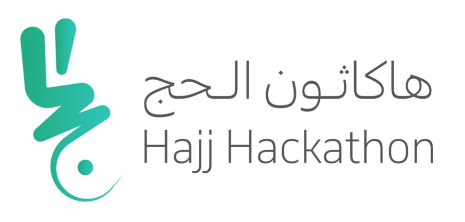

الإهتمامات والهوايات
-
البرمجة
احب البرمجة وإصلاح الأخطاء البرمجية ،وأرى البرمجة أنها نافذة الدخول إلى العالم الرقمي القادم
-
البحث والقراءة
الأبحاث العلمية وسيلتي لمواجهة أي غموض أو صعوبات علمية أو تقنية ،أحب القراءة حول كل ما يطور مهاراتي البرمجية
-
تصميم الجرافيكس
احب التصميم بصفة عامة ، تصميم الشعارات ،والتصميم الجرافيكي بشكل خاص
المهارات
-
هندسة البرمجيات
80 % -
التصميم الجرافيكي
70% -
الدعم الفني
55% -
مهارات البحث العلمي
95% -
التدريب والإلقاء
50%
الأنشطة والخبرات
| العمل كمشرفة إختبارات وطنية بالمركز الوطني للتقويم العالي : قياس | |
| العمل بوظيفة الدعم الفني لشبكات السيسكو بوزارة العدل | |
| رئيسة اللجنة الثقافية بشركة محمد عبدالله القرشي لخدمة حجاج الداخل |
الشهادات
|  | شهادة المشاركة في هاكاثون الحج |
| شهادة جينيس للمشاركة في أكبر هاكاثون في العالم | |
| الفوز بالمركز الثاني بمحور الابحاث العلمية بالمؤتمر العلمي الرابع لطلاب وطالبات الدراسات العليا | |
 |
شهادة CCNA المقدمة من CISCO |